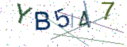
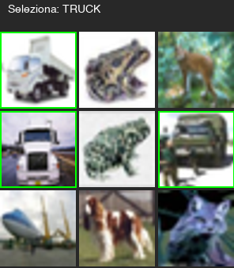

// Il Test di Turing al Contrario
Sezione 00. Un'idea nata mortaNel 2000 un gruppo di ricercatori di Carnegie Mellon inventa il CAPTCHA. L'acronimo sta per Completely Automated Public Turing test to tell Computers and Humans Apart. L'idea e' semplice: crea una sfida che un umano risolve al volo ma che una macchina non riesce a decifrare.
Lettere distorte. Rumore visivo. Rotazione casuale. Il principio e' che il sistema visivo umano eccelle nel riconoscere pattern degradati, mentre un computer ci inciampa. Per qualche anno funziona. I bot si fermano davanti a sei lettere storte.

Poi arrivano le reti convoluzionali. E il principio su cui si regge il CAPTCHA crolla.
Il problema e' che il CAPTCHA assume l'esistenza di un gap computazionale tra umani e macchine nel riconoscimento di pattern. Quell'assunzione era vera nel 2000, quando le macchine classificavano immagini con feature engineering manuale e SVM. Nel 2026 non lo e' piu'. Il gap si e' chiuso, e si e' chiuso nella direzione sbagliata: le macchine non sono arrivate al livello degli umani. Lo hanno superato.
Il paradosso del CAPTCHA. Qualsiasi sfida visiva abbastanza semplice da essere risolta da un umano in pochi secondi e' abbastanza semplice da essere approssimata da una rete neurale. Le CNN non "vedono" come noi. Fanno qualcosa di meglio: approssimano la funzione che mappa pixel in etichette, senza bisogno di capire cosa stanno guardando.
// Il Teorema Che Li Uccide
Sezione 01. Approssimazione universaleNel 1989 George Cybenko dimostra un risultato che sembra innocuo: una rete neurale con un singolo strato nascosto e un numero sufficiente di neuroni puo' approssimare qualsiasi funzione continua su un insieme compatto, con precisione arbitraria.
| f(x) − ∑i=1N vi · σ(wi · x + bi) | < ε
Obiezione: la funzione immagine → testo e' formalmente discreta, non continua. Un pixel in piu' di distorsione potrebbe trasformare una A in una R. Vero. Ma nella pratica il mapping e' approssimabile da una funzione continua nello spazio delle immagini, perche' piccole perturbazioni raramente cambiano la label. Se lo facessero, il CAPTCHA sarebbe illeggibile anche per gli umani. La rete non ha bisogno che la funzione sia continua ovunque. Le basta che lo sia quasi ovunque, nella regione della distribuzione dei CAPTCHA reali.
Il CAPTCHA e' una funzione f: immagine → testo. Una CNN e' un approssimatore universale. Ma Cybenko da solo e' un risultato di esistenza: ti dice che la rete esiste, non che la troverai. Il colpo reale e' un altro. Le reti neurali non solo possono approssimare la funzione: lo fanno con pochi dati, e generalizzano su esempi mai visti. Questa e' la proprieta' che uccide i CAPTCHA. Il teorema ti apre la porta, la generalizzazione la sfonda.
La difesa puo' rendere la funzione piu' complessa. Piu' distorsione, piu' rumore, piu' sovrapposizione. Ma ogni incremento di complessita' rende il CAPTCHA piu' difficile anche per gli umani. E le reti scalano meglio degli umani: aggiungi layer, aggiungi dati, l'accuratezza sale. L'umano invece si stufa, sbaglia, abbandona il sito.
Il trade-off impossibile. Piu' rendi il CAPTCHA difficile per le macchine, piu' lo rendi difficile per gli umani. Ma le macchine migliorano con piu' dati e piu' parametri. Gli umani no. Il punto di incrocio e' gia' stato superato: esistono CAPTCHA che le macchine risolvono meglio degli umani.
// Laboratorio: CAPTCHA Testuali
Sezione 02. 50.000 CAPTCHA, una CNN, 2 oreHo generato 50.000 CAPTCHA sintetici. Cinque caratteri ciascuno, scelti tra 36 simboli (A-Z, 0-9). Distorsione: rotazione casuale fino a 25 gradi per carattere, rumore a punti, linee di disturbo, gaussian blur. Roba che assomiglia ai CAPTCHA reali che giravano fino a pochi anni fa.
Poi ho addestrato una CNN da zero. Nessun modello pre-trained, nessun transfer learning. Quattro strati convoluzionali, batch normalization, dropout. Una testa di classificazione separata per ognuna delle 5 posizioni. Il modello predice ogni carattere indipendentemente.
| 1 | # Architettura: 4 conv layers + 5 classification heads |
| 2 | class CaptchaCNN(nn.Module): |
| 3 | def __init__(self): |
| 4 | self.features = nn.Sequential( |
| 5 | nn.Conv2d(3, 32, 3, padding=1), # 160x60 → 80x30 |
| 6 | nn.BatchNorm2d(32), nn.ReLU(), nn.MaxPool2d(2), |
| 7 | nn.Conv2d(32, 64, 3, padding=1), # 80x30 → 40x15 |
| 8 | nn.BatchNorm2d(64), nn.ReLU(), nn.MaxPool2d(2), |
| 9 | nn.Conv2d(64, 128, 3, padding=1), # 40x15 → 20x7 |
| 10 | nn.BatchNorm2d(128), nn.ReLU(), nn.MaxPool2d(2), |
| 11 | nn.Conv2d(128, 256, 3, padding=1), |
| 12 | nn.BatchNorm2d(256), nn.ReLU(), |
| 13 | nn.AdaptiveAvgPool2d((2, 5)), # fisso a 2x5 |
| 14 | ) |
| 15 | # una testa per ogni posizione del CAPTCHA |
| 16 | self.heads = nn.ModuleList([ |
| 17 | nn.Linear(512, 36) for _ in range(5) |
| 18 | ]) |
Training: 40 epoche, cosine annealing sul learning rate, batch size 256. Tutto su CPU, 24 core. 2 ore e 24 minuti.
La curva di apprendimento racconta la storia. Loss che crolla, accuracy che sale. 40 epoche, nessun plateau, nessun overfitting:
91% di accuracy per carattere sul training set. E sul test set?
Il test set sono 2000 CAPTCHA mai visti durante il training. Il modello li legge tutti. 20 esempi, 20 corretti:
Una rete neurale che ho addestrato sul mio laptop in due ore legge CAPTCHA distorti meglio di me. Senza trucchi. Senza OCR specializzato. Solo conv layers e backpropagation.
Obiezione legittima: il training set e il test set vengono dalla stessa distribuzione sintetica. Un critico potrebbe dire che il modello ha imparato il generatore, non i CAPTCHA in generale. La risposta e' nel vincolo del CAPTCHA stesso: i CAPTCHA reali non possono uscire da quella distribuzione senza diventare illeggibili per gli umani. Lettere distorte, rumore, blur:lo spazio delle trasformazioni possibili e' limitato dalla leggibilita' umana. La rete non deve generalizzare su qualsiasi immagine. Le basta coprire lo spazio ristretto di cio' che un umano riesce ancora a leggere.
La rete non "vede" le lettere come le vediamo noi. Non sa cos'e' una lettera. Ha imparato una funzione statistica che mappa configurazioni di pixel in classi. La distorsione, il rumore, le linee di disturbo:tutto quello che doveva fermare una macchina:sono rumore che la rete impara a filtrare. Per il CAPTCHA testuale, la partita e' finita.
// Laboratorio: CAPTCHA a Immagini
Sezione 03. "Seleziona tutti i semafori"I CAPTCHA testuali sono stati abbandonati da anni. Il campo di battaglia attuale e' la griglia di immagini: "Seleziona tutte le immagini con autobus", "Clicca su tutti i semafori". reCAPTCHA v2 di Google e' il piu' diffuso. L'idea e' che il riconoscimento di oggetti in contesti naturali sia piu' difficile per una macchina del semplice OCR.
Per testare questa ipotesi ho fatto qualcosa di deliberatamente assurdo: ho preso ResNet-50, un modello di classificazione pre-trained su ImageNet nel 2015. Undici anni fa. Nessun fine-tuning, nessun training aggiuntivo, nessuna ottimizzazione per i CAPTCHA. Un modello addestrato per un altro scopo. L'ho puntato su due dataset di foto reali: CIFAR-10 (32x32 pixel, miniature) e STL-10 (96x96 pixel, piu' vicino alla risoluzione dei tile CAPTCHA).
Questo e' il punto: non ho costruito un attacco. Ho preso un modello generico di classificazione e l'ho usato cosi' com'e'. Se funziona, il problema non e' implementativo. E' strutturale.
Il test: prendi 500 foto reali per categoria, classificale, vedi se il modello riconosce l'oggetto tra le prime 5 predizioni. I risultati su STL-10:
| Categoria | CIFAR-10 (32px) | STL-10 (96px) |
|---|---|---|
| Truck | 90.8% | 97.6% |
| Ship | 75.2% | 98.4% |
| Automobile | 34.2% | 95.8% |
| Airplane | 55.6% | 87.2% |
| Deer | 55.4% | 92.4% |
| Bird | 34.0% | 79.0% |
| Horse | 55.8% | 77.6% |
| Cat | 30.0% | 58.8% |
Su immagini a 96 pixel, meno della meta' della risoluzione di un tile CAPTCHA tipico, un modello del 2015 riconosce camion nel 97.6% dei casi e navi nel 98.4%. Senza aver mai visto un CAPTCHA in vita sua.
La colonna CIFAR-10 e' altrettanto rivelatrice: su miniature 32x32, praticamente irriconoscibili a occhio nudo, il modello trova ancora i truck nel 90.8% dei casi. A quella risoluzione un umano fatica a distinguere un camion da un autobus.
Il problema e' strutturale. I CAPTCHA a griglia chiedono di riconoscere semafori, autobus, strisce pedonali, idranti. Sono le stesse categorie su cui i modelli di visione vengono addestrati da anni, su dataset milioni di volte piu' grandi di qualsiasi training set CAPTCHA. ImageNet ha 14 milioni di immagini etichettate. COCO ne ha 330.000 con bounding box. Google chiede di riconoscere le cose che i modelli hanno gia' imparato a riconoscere meglio degli umani.
Per rendere il test piu' realistico ho simulato 200 griglie CAPTCHA per ognuna delle categorie. Ogni griglia: 9 tile, 2-4 target mescolati con non-target, proprio come reCAPTCHA. Il modello deve selezionare tutti i target e ignorare il resto.
| Target | Precision | Recall | Griglie perfette |
|---|---|---|---|
| Truck | 71.6% | 93.8% | 27.5% |
| Ship | 78.6% | 86.2% | 30.5% |
| Automobile | 97.5% | 50.0% | 13.5% |
| Airplane | 83.6% | 63.3% | 19.0% |
Le "griglie perfette" sono quelle dove il modello ha selezionato tutti i target corretti e zero falsi positivi. Con truck ci riesce il 27.5% delle volte, con ship il 30.5%.
Sembra basso? Un bot puo' riprovare. I CAPTCHA non limitano i tentativi perche' anche gli umani sbagliano, e quel margine di tolleranza e' esattamente cio' che il bot sfrutta.
| Target | 1 tentativo | 3 tentativi | 5 tentativi | 10 tentativi |
|---|---|---|---|---|
| Truck | 27.5% | 61.9% | 80.0% | 96.0% |
| Ship | 30.5% | 66.4% | 83.8% | 97.4% |
| Airplane | 19.0% | 46.9% | 65.1% | 87.8% |
| Automobile | 13.5% | 35.3% | 51.6% | 76.5% |
Con 5 tentativi un modello del 2015 passa la griglia truck nell'80% dei casi e ship nell'83.8%. Con 10 tentativi siamo sopra il 96%. Un bot non si stufa, non si distrae, e puo' mandare richieste parallele. Il rate limiting e' l'unica difesa, e non ha nulla a che fare con il CAPTCHA in se'.
E ricorda: questo e' ResNet-50, un modello del 2015. I modelli attuali (YOLO, CLIP, modelli vision-language) sono ordini di grandezza piu' capaci su immagini a risoluzione piena. Un modello moderno su tile CAPTCHA reali supererebbe il 90% di griglie perfette al primo tentativo.

// Il Paradosso di Google
Sezione 04. Chi risolve i CAPTCHA addestra chi li distruggeC'e' un'ironia strutturale in tutto questo. Ogni volta che clicchi "seleziona tutti i semafori" su reCAPTCHA, stai etichettando dati per Google. Quei click sono finiti nel training di Google Street View, poi in Waymo (le auto a guida autonoma di Google). Milioni di utenti che lavorano gratis per addestrare modelli di visione che rendono i CAPTCHA stessi obsoleti.
Nel 2014 Google pubblica un paper in cui una rete neurale risolve reCAPTCHA con il 99.8% di accuratezza. Lo stesso anno, Google introduce reCAPTCHA v2 ("No CAPTCHA reCAPTCHA"), che sostituisce la sfida visiva con un checkbox "Non sono un robot". La sfida visiva resta come fallback, ma la difesa principale diventa un'altra cosa: l'analisi del comportamento.
Google ha capito prima di tutti che le sfide visive erano finite. L'ha capito perche' aveva i dati per dimostrarlo. Dati che gli utenti stessi avevano etichettato risolvendo i CAPTCHA precedenti.
Il ciclo si chiude. Gli utenti risolvono CAPTCHA → i dati etichettati addestrano modelli di visione → i modelli di visione risolvono i CAPTCHA → servono CAPTCHA piu' difficili → gli utenti li risolvono → i dati addestrano modelli ancora migliori. E' un volano che accelera nella direzione opposta a quella che i CAPTCHA dovrebbero difendere.
// La Resa
Sezione 05. Da sfida visiva ad analisi comportamentalereCAPTCHA v3, rilasciato nel 2018, non mostra nessuna sfida all'utente. Zero semafori, zero strisce pedonali, zero lettere storte. Restituisce uno score tra 0 e 1 basato sull'analisi del comportamento: come muovi il mouse, quanto tempo stai sulla pagina, il pattern di scrolling, i cookie, il fingerprint del browser, la storia di navigazione.
E' la resa. Google ha abbandonato l'idea che una sfida visiva possa distinguere umani da macchine. Il CAPTCHA come test di Turing al contrario e' morto. Quello che resta e' sorveglianza comportamentale mascherata da misura di sicurezza.
Le alternative proposte hanno tutte dei limiti. I proof-of-work (risolvi un puzzle crittografico) penalizzano i dispositivi mobili e a basse risorse. La verifica biometrica solleva problemi di privacy. L'attestazione hardware (come le passkey) richiede un ecosistema chiuso. Nessuna di queste soluzioni ha l'universalita' e la semplicita' del CAPTCHA originale, e nessuna risolve il problema fondamentale: se una macchina puo' simulare il comportamento umano, non c'e' test che tenga.
L'approssimazione universale non e' un bug. E' il teorema fondamentale del deep learning. E dice una cosa chiara: qualsiasi funzione che un umano puo' calcolare, una rete neurale puo' approssimarla. Inclusa la funzione "risolvi questo CAPTCHA".
// I Numeri
Sezione 06. Quello che abbiamo misuratoTutto il codice e' su GitHub, nella cartella scripts/il-captcha-muore-di-matematica/. Due script: il primo genera CAPTCHA testuali e addestra la CNN, il secondo testa ResNet-50 su CIFAR-10 e STL-10 e simula le griglie. Puoi rieseguirli, modificare i parametri, verificare i risultati. I dati non mentono.
"I CAPTCHA non sono morti per un exploit. Sono morti perche' le reti neurali approssimano qualsiasi funzione risolvibile da un umano. E lo fanno con meno dati, meno tempo, e meno errori."
Un modello del 2015. Zero training specifico. Il CAPTCHA era gia' finito.